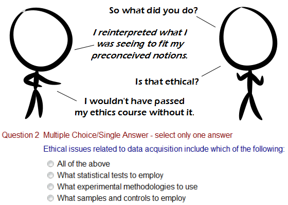

Comic JK 805
When I Feel Like It
⇤
<
?
>
⇥

⇤
<
?
>
⇥
Forum
.
RSS
.
Digg
.
Facebook
.
Reddit
.
Twitter
.
Stumbleupon
Enter your thoughts on number 805 here. Please, no spamming, trolling, phreaking, acquiring data unethically, or acquiring unethical data, or dating unethical acquisitions. "All of the above" -- yet the other answers are below it. That must be the only correct answer then. > Yes, that's the joke, he reinterpreted it in a different order. >> Oh, I thought the joke was ethics and data acquisition in the same sentence. >>> "data acquisition" does not imply acquisition or sensitive, damning, private or personal information. so how many people clicked on the radio buttons? I did. > in my GTK-theme they look a little different. First! Oh. Which of the following is correct? > a. None of these are correct b. 1 of these answers is correct c. 2 of these answers are correct d. 3 of these answers are correct >b, but that's got nothing to do with the comic... >> no, it's d. b, c, and d are all correct, and that's the most complete answer. For any set of three correct answers (d), at least two correct answers(c) and one correct answer (b) exist. What is this? Worse than XKCD and even Toothpaste for Dinner. The real joke is on people who get zealoty when someone says that interpretation is more important than evidence. >Especially since in most cases, the "evidence" is meaningless until interpreted. "I reject your reality and substitute my own!"